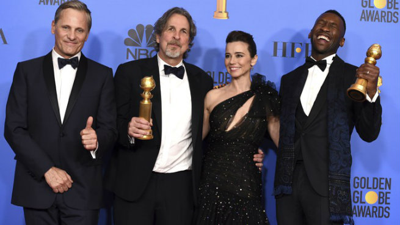
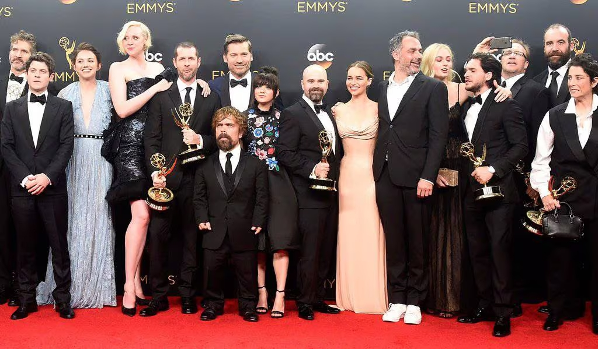

Oscars: Mejor Película - The Green Book
Green Book ha dado la sorpresa final de la noche de los Oscar al alzarse con el premio más importante de la ceremonia, la de mejor película, que ha sido entregado por una sonriente Julia Roberts.
El filme dirigido por Peter Farrelly ha logrado tres estatuillas doradas de las cinco a las que competía: película, guión original y actor secundario (Mahershala Ali) y ha acabado imponiéndose contra todo pronóstico a la Roma de Alfonso Cuarón, que prometía hacer historia en esta 91ª edición. La carta de amor del realizador a su nana ‘Libo’ Rodríguez y a su infancia en el México de los años setenta ha logrado tres de los diez premios a los que aspiraba: película de habla no inglesa, director y fotografía.
Peter Farrelly ha salido al escenario del teatro Dolby de Los Ángeles con todo el equipo de la película y ha agradecido especialmente al protagonista Viggo Mortensen su participación en esta entrañable historia de amistad basada en hechos reales entre el músico negro Don Shirley (Mahershala Ali) y el chófer italoamericano Tony Lip (Mortensen) que le llevó de gira por el sur de Estados Unidos a mediados de los sesenta. “Sin ti no hay película”, ha dicho el realizador, que también ha querido recordar a la actriz Carrie Fisher. Green Book ya se llevó el premio del público del festival de Toronto, tres Globos de Oro y fue elegida como el mejor filme por el Sindicato de Productores (PGA).
Emmys: Mejor Serie - Game of Thrones
Finalmente, el show que ha conseguido llevarse el gato al agua en la categoría de mayor renombre de la velada ha sido 'Juego de tronos', que ha regresado en plena forma tras su ausencia en la ceremonia del año pasado, llevándose nueve Emmys de los veintidós a los que optaba, incluyendo el de mejor actor de reparto para Peter Dinklage.
Aunque haya tenido sus detractores, que han señalado su acelerada narrativa y una gestión del tiempo un tanto caótica y precipitada, hay que reconocer que la séptima temporada de la serie de David Benioff y D.B. Weiss ha llevado un paso más allá su sentido del espectáculo —aunque parezca imposible— y su capacidad para sorprender al respetable con los giros dramáticos marca de la casa a los que nos tiene acostumbrados.
¿Repetirá éxito la serie estrella de HBO con su octava y última temporada? De seguir con esta tónica en cuanto a calidad se refiere —tanto técnica como artística y narrativa—, no cabe duda que nos espera un fin de fiesta excelente que bien podría ser recompensado con un aluvión de premios. Esperaremos pacientemente al aún lejano estreno.